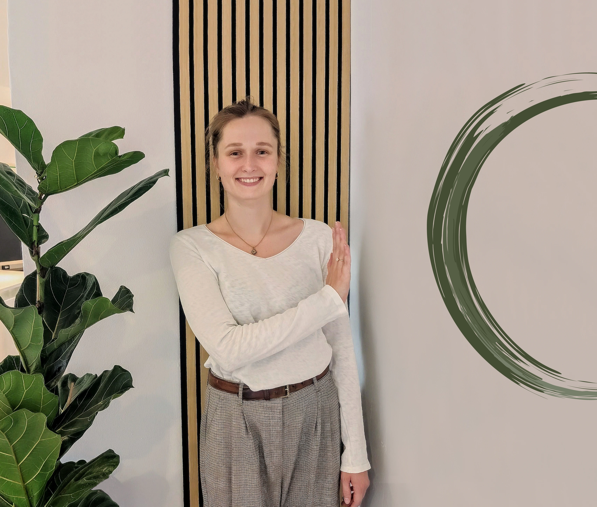
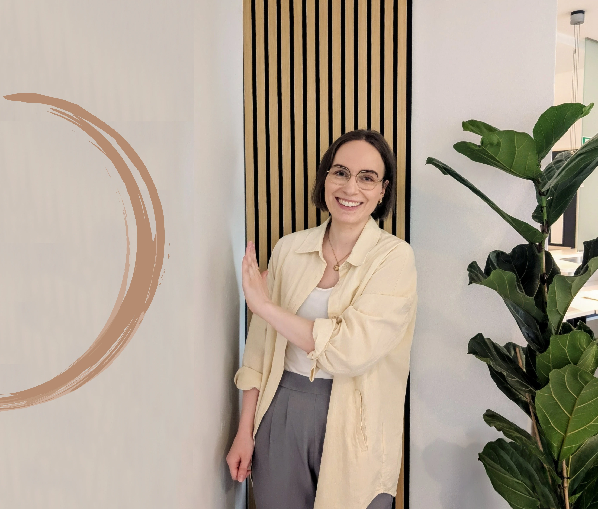

Wer wir sind und wofür wir stehen
Ein Einblick in unsere Praxisräume, unsere Haltung und die Menschen, die für Sie da sind.
Unterschiedliche Stärken – ein gemeinsames Ziel
Jede von uns bringt eigene Schwerpunkte mit – genau diese Vielfalt macht unsere Arbeit für Sie wertvoll.

Annika
Psychiatrie · Neurofeedback · Hirnleistungstraining
Fachlicher Schwerpunkt in der Behandlung von Jugendlichen und Erwachsenen im Bereich Psychiatrie – u. a. bei Depressionen, Angststörungen, Stress- und Erschöpfungszuständen sowie ADHS. Ergänzend arbeitet sie mit Neurofeedback und Hirnleistungstraining zur Förderung von Konzentration und Selbstregulation.
Nach dem Bachelor in Ergotherapie folgte ein Master in Angewandter Psychologie und Beratung, dazu Fortbildungen in Gesprächstherapie, ADHS und Skillsmanagement. In ihrer Masterarbeit entwickelte sie ein eigenes Stressmanagementprogramm zur Burnout-Prävention.

Lisa
Psychiatrie · Neurologie · Orthopädie · Handtherapie
Über einen zweiten Bildungsweg – nach einem Studium in Grafik- und Kommunikationsdesign – fand Lisa zur Ergotherapie. Während der Ausbildung absolvierte sie zusätzlich eine Weiterbildung zum systemischen Coach, deren Perspektiven heute in ihre Arbeit einfließen.
Ihr fachlicher Schwerpunkt liegt in der Arbeit mit Jugendlichen und Erwachsenen im psychiatrischen Bereich sowie – durch ihre Begeisterung für Bewegung und den menschlichen Körper – in Neurologie, Orthopädie und Handtherapie. Sie hat sich zudem im Bereich Neurofeedback fortgebildet.